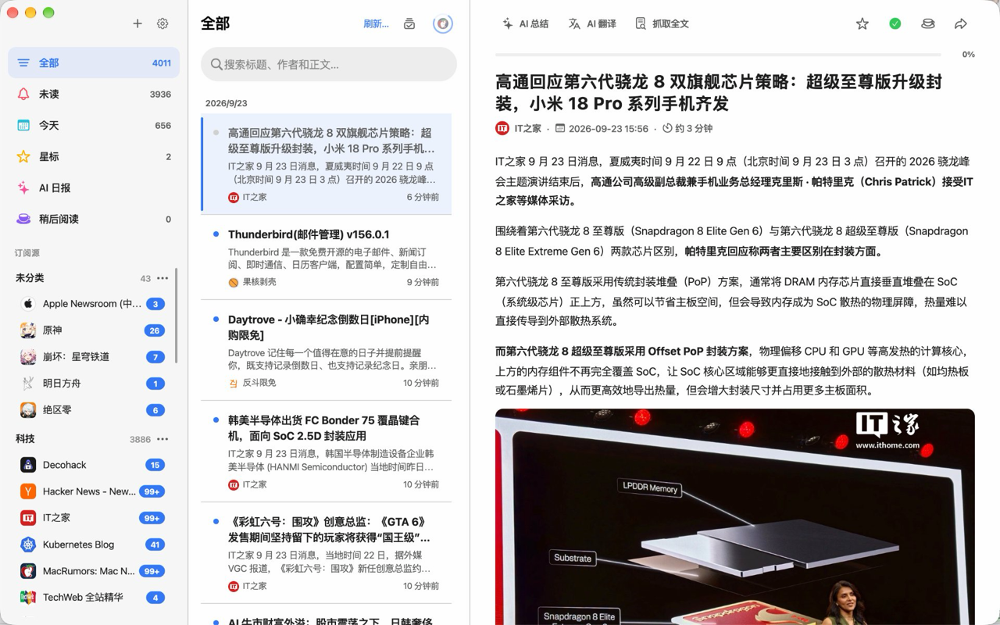

完整 RSS / Atom 支持
订阅、分类、自动刷新、ETag / Last-Modified 增量抓取、RSSHub 实例支持。
LimitRSS 是一款简洁高效的 RSS 阅读器，帮助你集中订阅、整理和阅读来自不同网站的内容。它支持 RSS、Atom 与 RSSHub 订阅源，可按分类管理文章，并提供未读、星标、稍后阅读、特别关注和多设备同步等功能。内置 AI 总结、AI 翻译、智能分类及 AI 日报，帮助你快速掌握重点信息，在减少信息噪音的同时，打造更专注、更个性化的阅读体验。
不是再做一个 RSS 阅读器，而是把订阅、AI 总结、翻译和知识沉淀串成一条流。
订阅、分类、自动刷新、ETag / Last-Modified 增量抓取、RSSHub 实例支持。
OpenAI / Anthropic / DeepSeek / 智谱 GLM / Ollama / 任意 OpenAI 兼容端点。流式响应，可中断。
把文章压成一段话，翻译保留原文结构，模板支持 {{title}} {{content}} 等变量。
本地全文索引，按已读、星标、来源、AI 状态多维筛选。OPML 导入导出，方便迁移。
订阅、文章、AI Key 全在本地。AI 请求直连提供商，不过任何中间服务器。
跨端共享设计 tokens，桌面三栏（订阅 / 列表 / 阅读器），移动端单栏自适应。
Flutter 一次开发，五端原生体验。HarmonyOS NEXT 通过原生宿主承载 Flutter UI。

最新稳定版 v0.3.0。
点击下载按钮即开始获取最新版安装包。版本详情与校验值请查看 更新日志。
不是。当前主线产品是独立的跨端客户端（Flutter + HarmonyOS NEXT 宿主），与思源笔记没有任何 API、存储或协议层的耦合。仓库里的 src/ 目录保留着早期思源插件形态的代码作为历史记录。
API Key 仅存储在你本机的客户端（通过 flutter_secure_storage）。AI 请求从客户端直接发到对应提供商（OpenAI / Anthropic / DeepSeek / Ollama …），不经过任何中间服务器。
内置类型：OpenAI、Anthropic、DeepSeek、智谱 GLM、Groq、Ollama，以及任何 OpenAI 兼容的自定义端点。Anthropic 使用 SSE 流式，其他 OpenAI 兼容端使用标准 Chat Completions 接口。
当前发布资源主要面向 macOS 与移动端。Windows 用户可以从源码 flutter build windows 自编译，仓库的 apps/limitrss_flutter 已经包含 Windows 平台壳工程。
在客户端内通过 OPML 导入 / 导出功能完成。从 Inoreader、Feedly、NetNewsWire、Reeder 等工具导出的 OPML 文件可直接导入。
支持。内置官方与若干公共 RSSHub 实例，可在设置里配置自定义实例地址或自建实例。